A Premier League 2026/27 também mudou de rosto. Coventry City, Hull City e Ipswich Town conquistaram o acesso e ocuparam as vagas deixadas por Burnley, West Ham e Wolverhampton. Ao lado de gigantes como Arsenal, Liverpool, Manchester United, Manchester City e Chelsea, os promovidos ajudam a formar uma liga em que estádios ultra modernos dividem espaço com arenas centenárias. É um contraste que acompanha a própria trajetória desde a criação da competição: clubes mudam de divisão, estádios são ampliados ou substituídos, mas a relação entre torcida, cidade e arquibancada continua sendo parte essencial da identidade do campeonato.
A relação atual de clubes também reflete as mudanças entre divisões detalhadas no panorama de promovidos e rebaixados da temporada 2026/27. Mas, algumas dessas arenas acompanham seus clubes há mais de um século e concentram milhares de partidas, gerações de torcedores e diferentes eras do futebol inglês.
Vitality Stadium: uma pequena casa com uma história muito maior
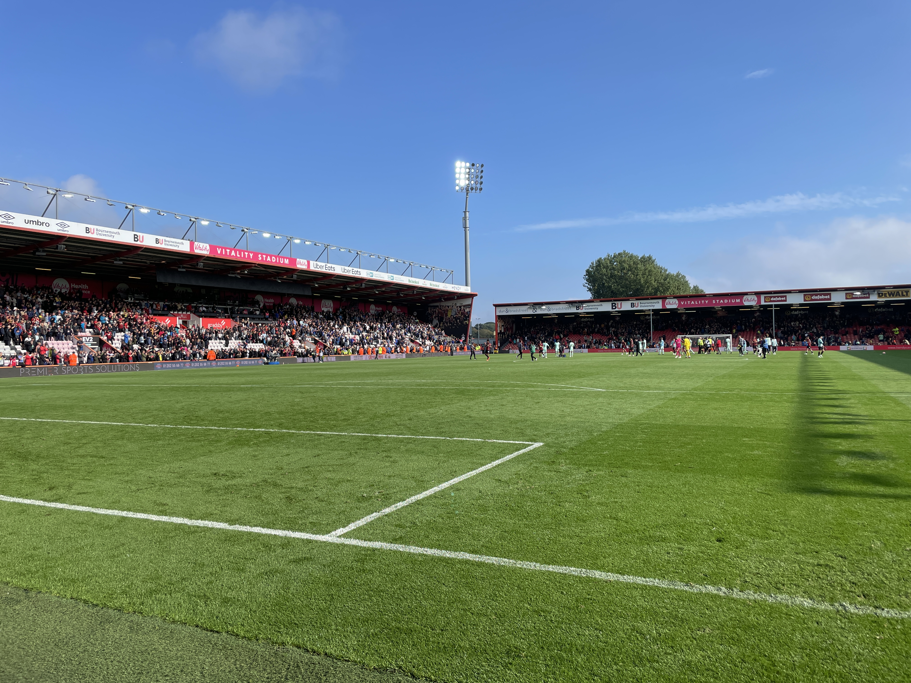
O Bournemouth joga no mesmo endereço de Dean Court desde 1910, embora a configuração atual do estádio resulta principalmente da reconstrução feita no início dos anos 2000. Com cerca de apenas 11,3 mil lugares, é uma arena de escala incomum para a elite inglesa, inserida na região de Kings Park, em Bournemouth. O contraste entre tamanho físico e permanência na primeira divisão é justamente parte de sua identidade. Um arquivo de partidas rastreia 598 jogos no estádio entre 2004 e 2026, sendo 172 pela Premier League. O número, portanto, é um amplo recorte moderno, mas não representa todos os jogos disputados pelo clube no local desde 1910.
Emirates Stadium: troca de tradição por capacidade de crescimento
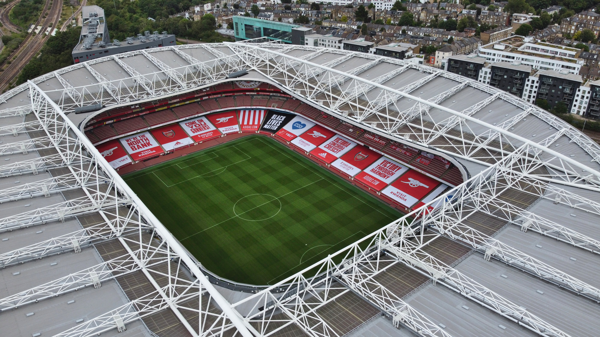
Inaugurado em 2006, o Emirates Stadium marcou a saída do Arsenal de Highbury depois de 93 anos. A arena fica no norte de Londres, em uma área urbana e residencial próxima de Drayton Park, e tem capacidade de 60.704 torcedores. O primeiro grande evento futebolístico foi o jogo de despedida de Dennis Bergkamp, em julho de 2006. Desde então, o estádio atravessou diferentes ciclos esportivos do clube e se consolidou como uma das maiores casas da Premier League. A base histórica consultada fecha 505 partidas competitivas do Arsenal no Emirates entre 2006 e setembro de 2026. Considerando apenas a Premier League, o estádio chegou a 382 jogos do Arsenal até o início da temporada 2026/27.
Villa Park: futebol com mais de um século em Birmingham
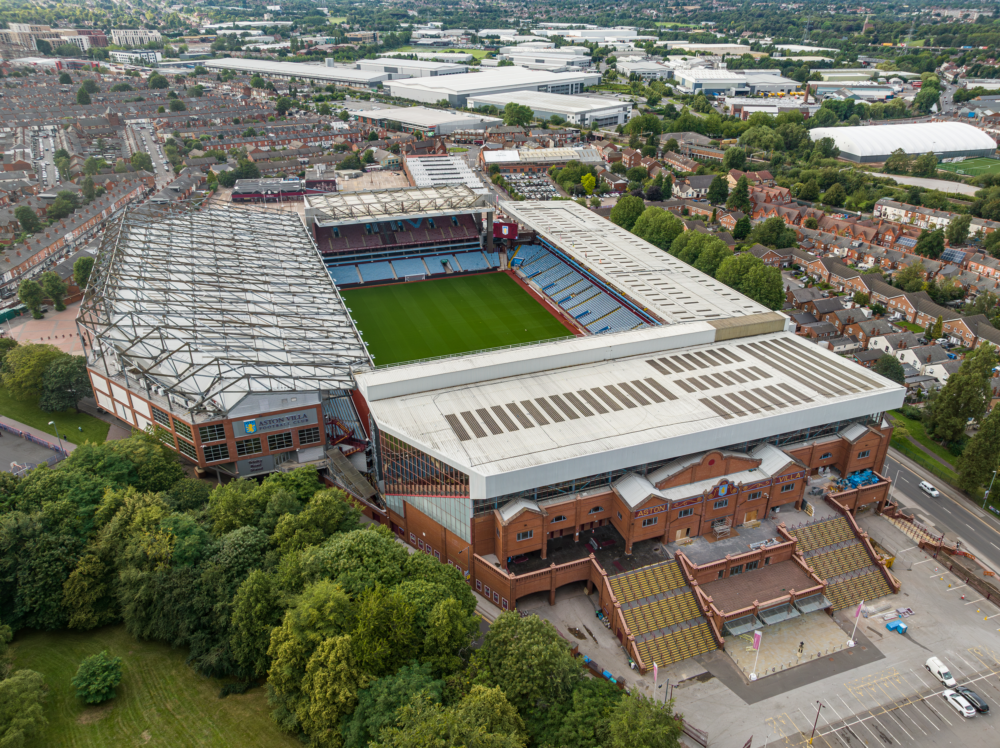
O Aston Villa joga no Villa Park desde 1897, o que coloca o estádio entre as grandes casas históricas ainda em atividade no futebol inglês. Sua capacidade de referência antes das obras atuais era de aproximadamente 42,9 mil lugares, mas a temporada 2026/27 é particular: a North Stand permanece fechada durante uma ampliação que pretende levar o estádio para mais de 50 mil espectadores. Villa Park também recebeu jogos internacionais e decisões em diferentes épocas, incluindo a final da antiga Recopa Europeia de 1999. Em termos estatísticos, uma base moderna registra 563 partidas do Aston Villa no estádio desde 2000. O número real desde 1897, evidentemente, é muito maior, mas não aparece consolidado com segurança em um único contador consultado.
Gtech Community Stadium: nova casa nasceu perto da antiga
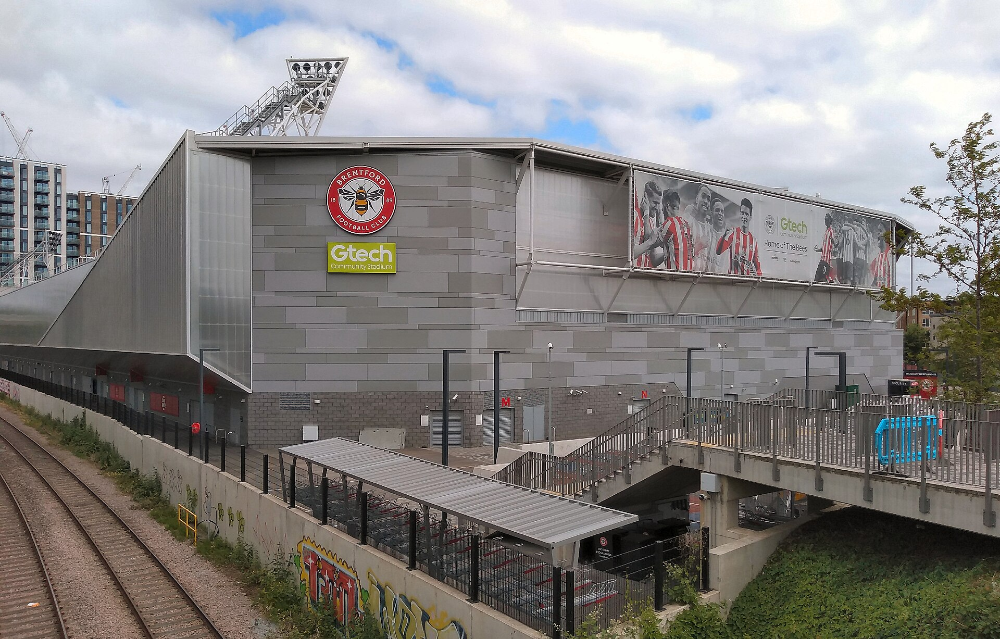
O contraste com Villa Park é enorme. O atual estádio do Brentford foi inaugurado em 2020 e tem 17.250 lugares. Construído em West London, na região de Lionel Road e Kew Bridge, fica a menos de uma milha de Griffin Park, onde o clube atuou por 116 anos. Essa proximidade ajudou a preservar a ligação geográfica com a torcida mesmo durante uma transformação radical de infraestrutura. Por ser uma arena recente, sua contagem é muito mais controlável: a base histórica consultada registra 137 partidas do Brentford no estádio até setembro de 2026, somando ligas e copas. Dessas, 97 correspondem a jogos de Premier League desde a promoção na temporada de 2021/22.
Amex Stadium: a casa que encerrou décadas de instabilidade
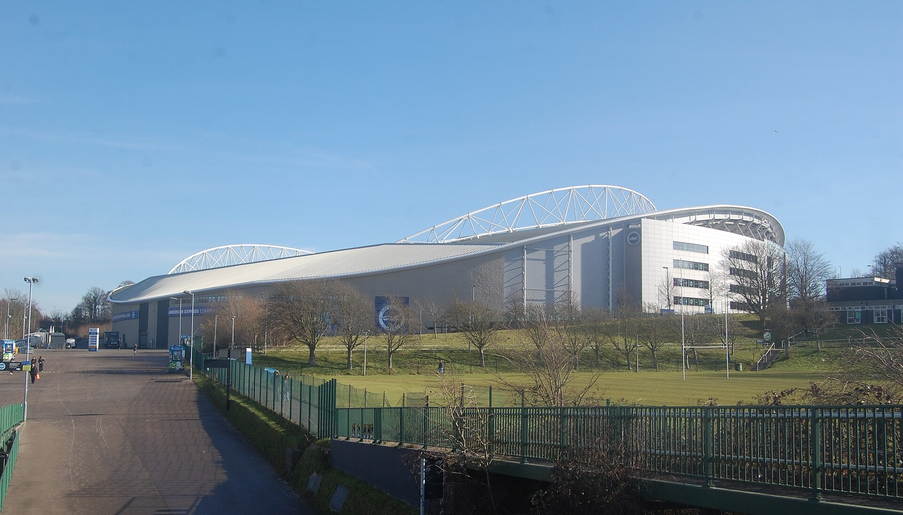
O American Express Community Stadium, popularmente Amex, foi inaugurado em 2011, em Falmer, nos arredores de Brighton, e comporta cerca de 31,9 mil torcedores. Sua importância vai além da arquitetura: representou o fim de um longo período no qual o Brighton ficou sem uma casa compatível com suas ambições depois da saída do Goldstone Ground. A abertura oficial ocorreu em 30 de julho de 2011, contra o Tottenham, enquanto o primeiro jogo competitivo foi diante do Doncaster. Um arquivo moderno reúne 138 partidas do time principal no Amex em seu recorte disponível.
Stamford Bridge: o estádio que nasceu antes do clube
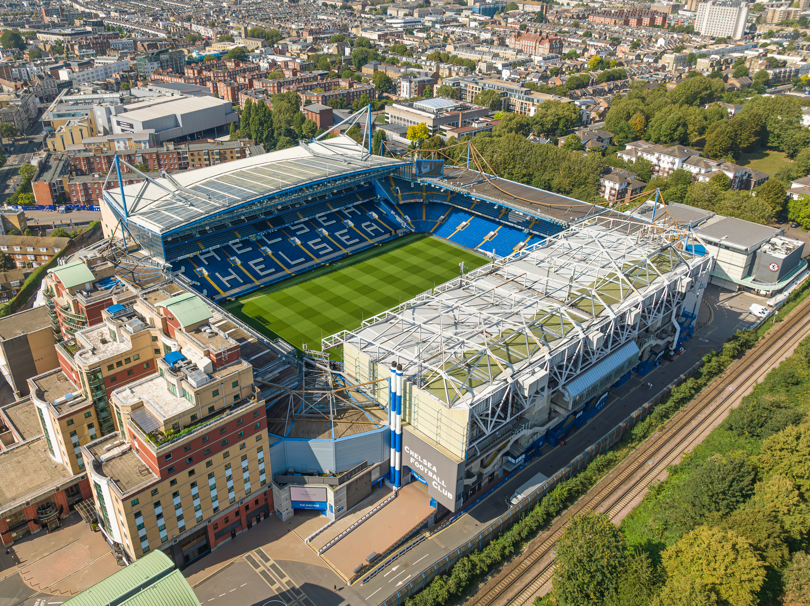
Poucos estádios explicam tão bem a peculiaridade do futebol londrino quanto Stamford Bridge. A estrutura existe desde o século XIX e o Chelsea passou a ocupá-la em 1905, poucos meses depois da fundação do clube. Com capacidade em torno de 40,3 mil lugares, está cercado pela malha urbana de Fulham e da Fulham Road, sem o isolamento típico de grandes complexos modernos. O estádio ainda recebeu atletismo antes de se tornar definitivamente uma casa de futebol. Como o clube jamais deixou a Premier League desde 1992, Stamford Bridge recebeu 654 partidas dos Blues pela competição até 12 de setembro de 2026. A história de Stamford Bridge mostra por que seu peso ultrapassa a capacidade relativamente modesta entre os gigantes ingleses.
Coventry Building Society Arena: de volta na Premier League em 2026/27
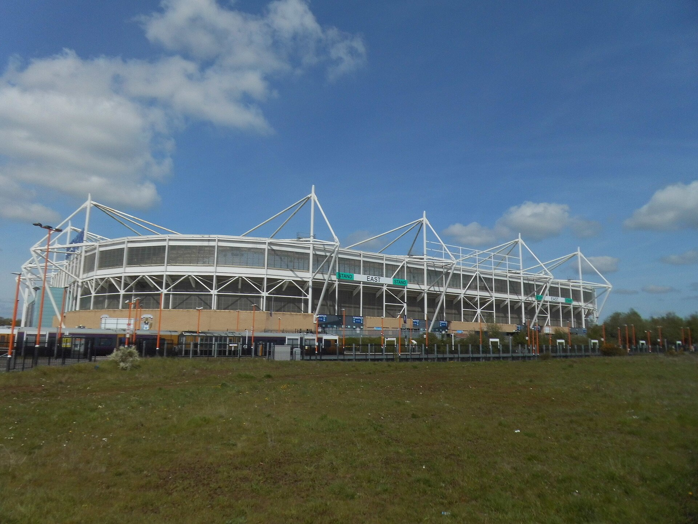
O Coventry deixou Highfield Road e estreou em sua nova arena em 20 de agosto de 2005, vencendo o Queens Park Rangers por 3 a 0. Hoje chamada Coventry Building Society Arena, a casa comporta aproximadamente 32,6 mil pessoas e faz parte de um complexo construído no norte da cidade, em uma região cujo desenvolvimento urbano foi impulsionado pelo projeto do estádio. A história, porém, não foi linear: problemas entre clube e operadores fizeram o Coventry passar períodos mandando partidas longe dali. Por isso, uma contagem recente registra 130 jogos do time no estádio apenas desde o retorno de 2021 até setembro de 2026. É um recorte desse período, não o total desde a abertura em 2005.
Selhurst Park: mais de um século no sul de Londres
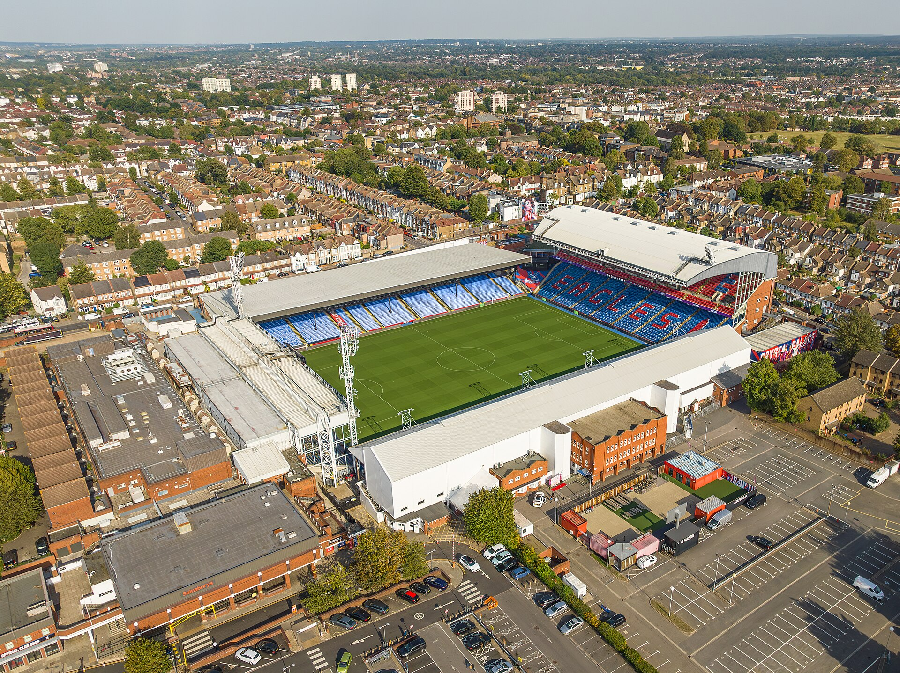
Inaugurado em 1924, Selhurst Park chegou ao centenário mantendo características de estádio tradicional inglês: aproximadamente 25.486 lugares, arquibancadas muito próximas do campo e ruas residenciais imediatamente ao redor da arena no sul de Londres. Além do Crystal Palace, o local já recebeu Wimbledon, Charlton em períodos de compartilhamento, uma partida entre Inglaterra e País de Gales e dois jogos dos Jogos Olímpicos de Londres de 1948. O arquivo digital recente consultado reúne 232 partidas do Palace em Selhurst Park, mas cobre apenas 16 temporadas e deixa claro que se trata da quantidade de jogos existente em sua base, não da vida completa do estádio. É, portanto, um mínimo documentado diante de uma relação iniciada há mais de cem anos.
Hill Dickinson Stadium: a história do recomeço em Mersey
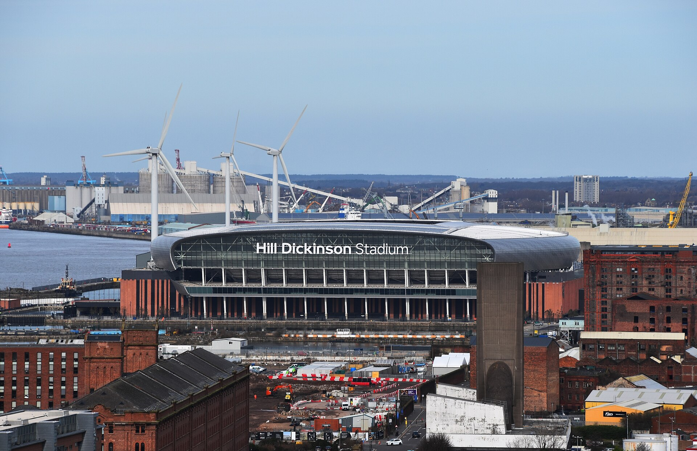
O Everton vive uma situação oposta. Depois de atuar em Goodison Park desde 1892, o clube iniciou em 2025/26 sua primeira temporada completa no Hill Dickinson Stadium, construído em Bramley-Moore Dock, às margens do Rio Mersey. A nova casa tem capacidade de 52.769 pessoas e colocou o clube em um ponto de transformação urbana da orla norte de Liverpool. O primeiro jogo de Premier League ali ocorreu em 24 de agosto de 2025, contra o Brighton. Até 14 de setembro de 2026, o time principal havia disputado 23 partidas oficiais no novo estádio: 21 pela Premier League, uma pela Copa da Liga e uma pela Copa da Inglaterra. É um dos poucos casos em que toda a história competitiva da arena pode ser fechada partida por partida.
Craven Cottage: futebol às margens do Tâmisa desde 1896
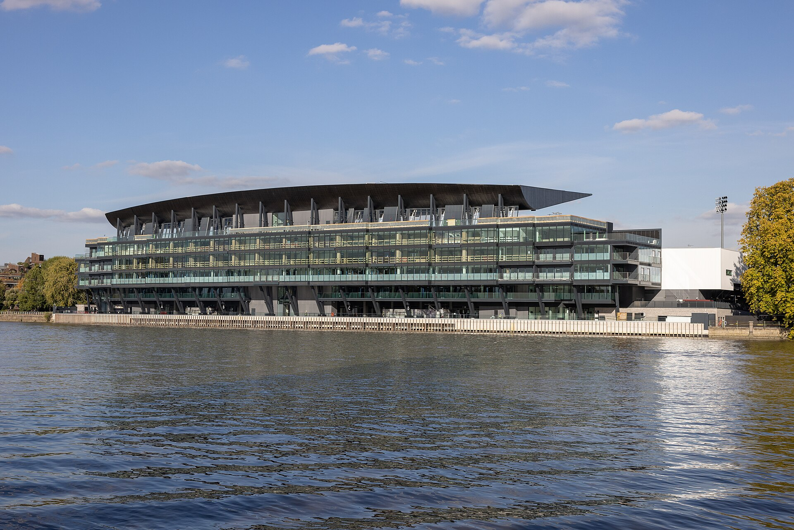
Craven Cottage recebe o Fulham a 130 anos e continua sendo uma das imagens mais particulares do futebol inglês. O estádio está literalmente encaixado entre bairros residenciais, parques e o Rio Tâmisa. A reconstrução da Riverside Stand foi projetada para levar a capacidade para aproximadamente 29,6 mil lugares e acrescentou restaurantes, espaços de hospitalidade e uma nova passagem pública junto ao rio; o clube informa que a arquibancada já está completamente aberta. Ao mesmo tempo, permanecem símbolos antigos como a Johnny Haynes Stand e o próprio pavilhão que dá nome ao estádio. O arquivo estatístico consultado reúne 280 partidas do Fulham em Craven Cottage em 17 temporadas disponíveis. Como a casa é usada desde o século XIX, o total histórico completo é muito superior e não deve ser confundido com esse recorte moderno.
MKM Stadium: a casa compartilhada
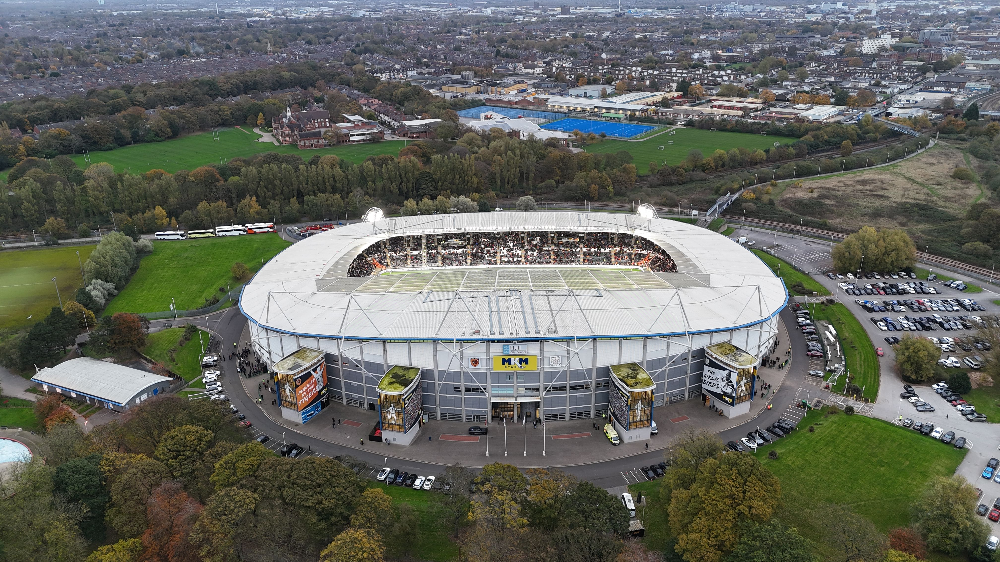
O atual estádio do Hull City foi inaugurado em dezembro de 2002, substituindo Boothferry Park. Com aproximadamente 25.586 lugares, fica em West Park e tem uma característica incomum: divide seu calendário entre o Hull City, no futebol, e o Hull FC, no rugby league. O cenário dentro de uma área de parque ajuda a diferenciar a arena de vários estádios urbanos compactos da Inglaterra. Em agosto de 2025, contra o Blackburn, o Hull disputou ali seu 500º jogo de liga. Esse marco não inclui as partidas de copas, portanto o total competitivo geral no estádio já é superior a 500.
Portman Road: tradição no coração de Ipswich
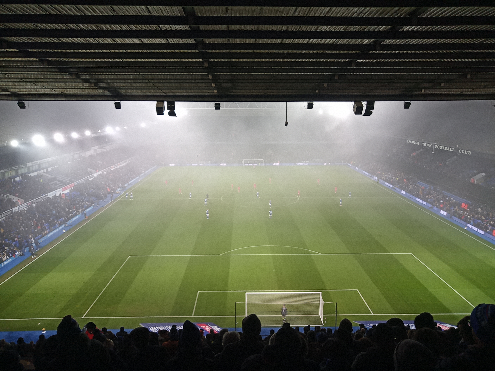
Portman Road recebe futebol desde 1884 e permanece uma das casas mais antigas da elite inglesa. Com cerca de 29.673 lugares, fica praticamente no centro de Ipswich e a poucos minutos a pé da estação ferroviária, algo que reforça a integração do clube com a cidade. As arquibancadas homenageiam duas figuras fundamentais da história do Ipswich e da seleção inglesa: Sir Alf Ramsey e Sir Bobby Robson. A dificuldade estatística é proporcional à idade da arena. Uma base histórica de estádio consultada reúne mais de 600 jogos do time principal em seu recorte iniciado nos anos 1990, mas não cobre toda a utilização desde o século XIX.
Elland Road: uma casa inseparável
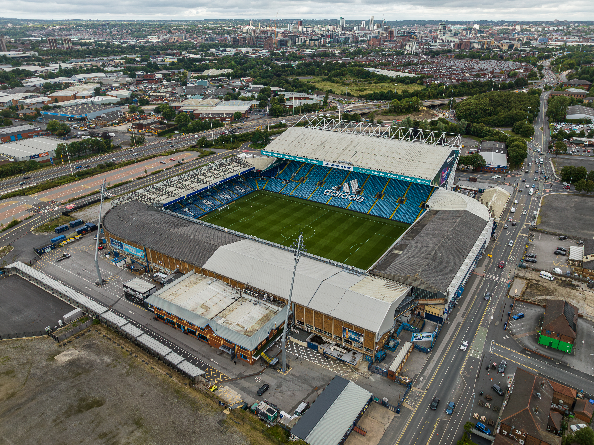
Elland Road existe como campo de futebol desde o fim do século XIX e é a casa do Leeds United desde a criação do clube, em 1919. A capacidade de referência antes da atual expansão é de 37.645 lugares. Em janeiro de 2026, o clube recebeu autorização para um projeto que poderá elevar esse número para aproximadamente 53 mil, mantendo o estádio em funcionamento durante as obras. O peso local é reforçado pelo fato de Leeds ser uma grande cidade essencialmente identificada com um único clube de elite. Estatisticamente, o arquivo recente disponível contabiliza 218 partidas do Leeds em Elland Road ao longo de 18 temporadas de sua cobertura. Não é o total de mais de um século.
Anfield: uma ligação que começou em 1892
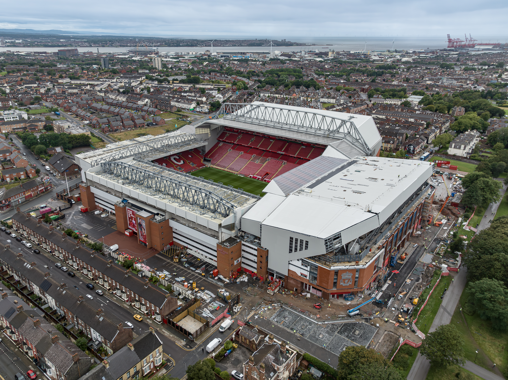
Anfield foi inaugurado em 1884 e, curiosamente, recebeu primeiro o Everton. O Liverpool passou a jogar ali depois de sua fundação, em 1892. Atualmente com capacidade de aproximadamente 61.276 lugares após as ampliações das últimas décadas, o estádio continua inserido no bairro de Anfield, cerca de três quilômetros ao norte do centro de Liverpool, cercado por ruas e construções residenciais. Um arquivo especializado cobre 63 temporadas entre 1963 e maio de 2026 e contabiliza 1.680 partidas do Liverpool em Anfield neste período. Ainda assim, faltam mais de sete décadas para completar toda a história do clube no local. Só na Premier League, o Liverpool alcançou 654 jogos como mandante em Anfield até 12 de setembro de 2026. O tamanho simbólico dessa relação aparece com mais profundidade na história e tradição de Anfield.
Etihad Stadium: a transformação do leste de Manchester
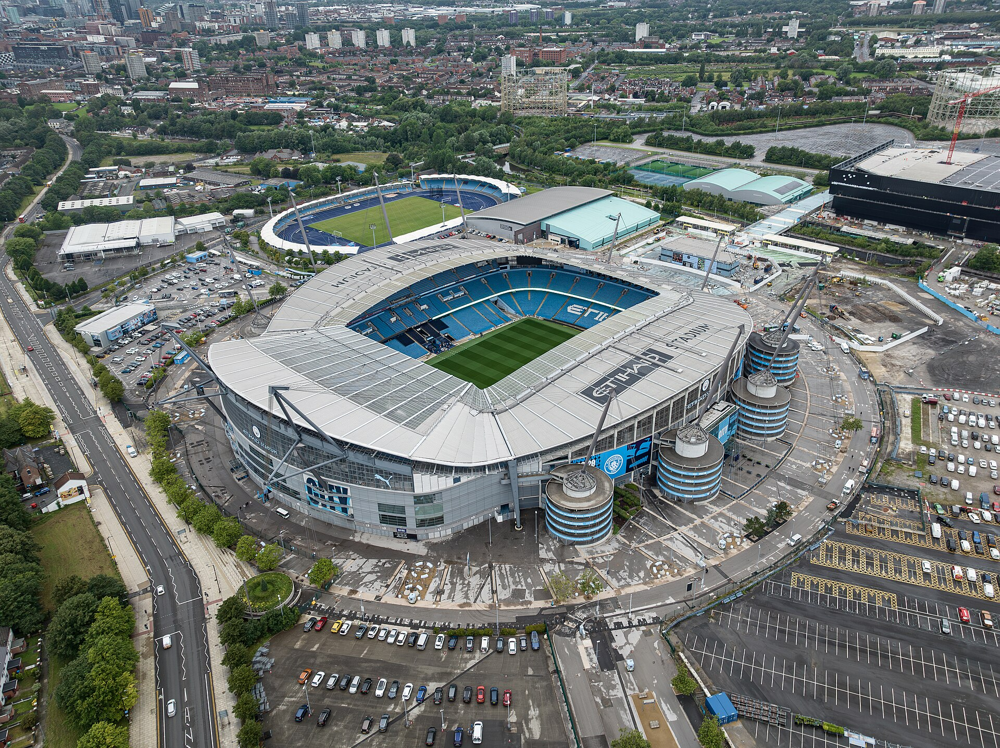
Construído para os Jogos da Commonwealth(uma competição multiesportiva internacional, parecida em conceito com os Jogos Olímpicos ) de 2002 e adaptado posteriormente ao futebol, o Etihad passou a receber o Manchester City em 2003, após a saída de Maine Road. A arena se tornou o núcleo do Etihad Campus e de um amplo projeto de regeneração no leste de Manchester. Sua expansão mais recente adiciona mais de sete mil lugares na North Stand e leva a capacidade para acima de 60 mil torcedores. Aqui a estatística histórica é completa: até setembro de 2026, o City havia disputado 602 partidas no Etihad, com 439 pela Premier League, 71 pela Champions League, 43 pela FA Cup, 31 pela Copa da Liga, dez pela antiga Copa da UEFA e oito pela Liga Europa.
Old Trafford: mais de 2.500 jogos
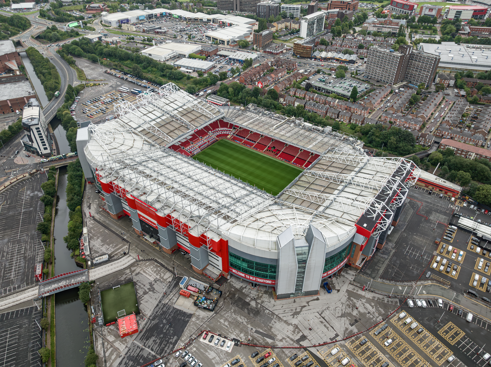
Old Trafford recebeu seu primeiro jogo do Manchester United em 19 de fevereiro de 1910. Com capacidade atual na faixa de 74 mil lugares, é a maior arena utilizada regularmente por um clube da liga inglesa. Sua história também inclui uma ruptura dramática: bombardeios durante a Segunda Guerra Mundial danificaram severamente o estádio, obrigando o United a passar anos mandando partidas em Maine Road antes da reabertura. Um arquivo histórico do clube contabiliza 2.566 jogos do time principal em Old Trafford até setembro de 2026, com 1.583 vitórias, 558 empates e 425 derrotas. Dentro desse universo, 654 partidas foram pela Premier League até o dérbi contra o Manchester City de 13 de setembro de 2026. A história de Old Trafford ajuda a dimensionar por que o estádio se tornou uma referência mundial.
St James’ Park: um gigante instalado no centro da cidade
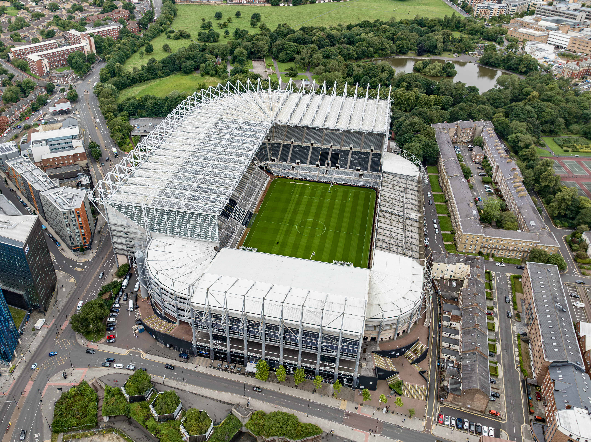
O futebol é disputado no terreno de St James’ Park desde o século XIX, e o Newcastle United o utiliza desde a formação do clube, em 1892. A capacidade atual gira em torno de 52,3 mil pessoas, mas talvez a característica mais impressionante seja sua localização: o estádio domina a paisagem urbana e fica integrado ao centro de Newcastle, em vez de afastado em uma área periférica. Um arquivo moderno registra 507 jogos sob o nome St James’ Park desde 2000 e outros 33 sob Sports Direct Arena. Isso estabelece ao menos 540 partidas nesse recorte, sem contar outros aliases e, principalmente, o século anterior de utilização.
City Ground: às margens do Trent
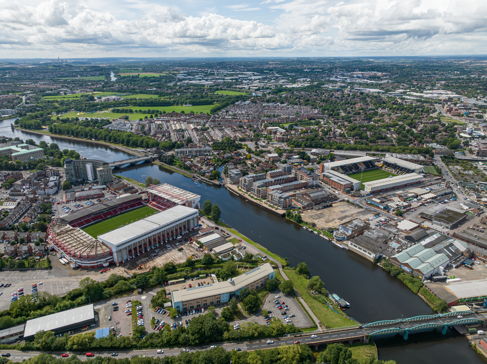
O Nottingham Forest joga no City Ground desde 1898. Com aproximadamente 30,4 mil lugares, o estádio fica em West Bridgford, na margem do Rio Trent, muito próximo de Trent Bridge, outro ponto histórico do esporte inglês. Aqui existe uma das bases históricas mais extensas entre os clubes atuais: o arquivo contabiliza 3.077 partidas do Forest no City Ground até 2026, mas essa base não se limita às competições oficiais modernas e inclui também amistosos, partidas de períodos de guerra, jogos de copas regionais e outros compromissos históricos. O dado é valioso justamente porque mostra a dimensão total de utilização da arena.
Stadium of Light: futebol construído sobre uma mina de carvão
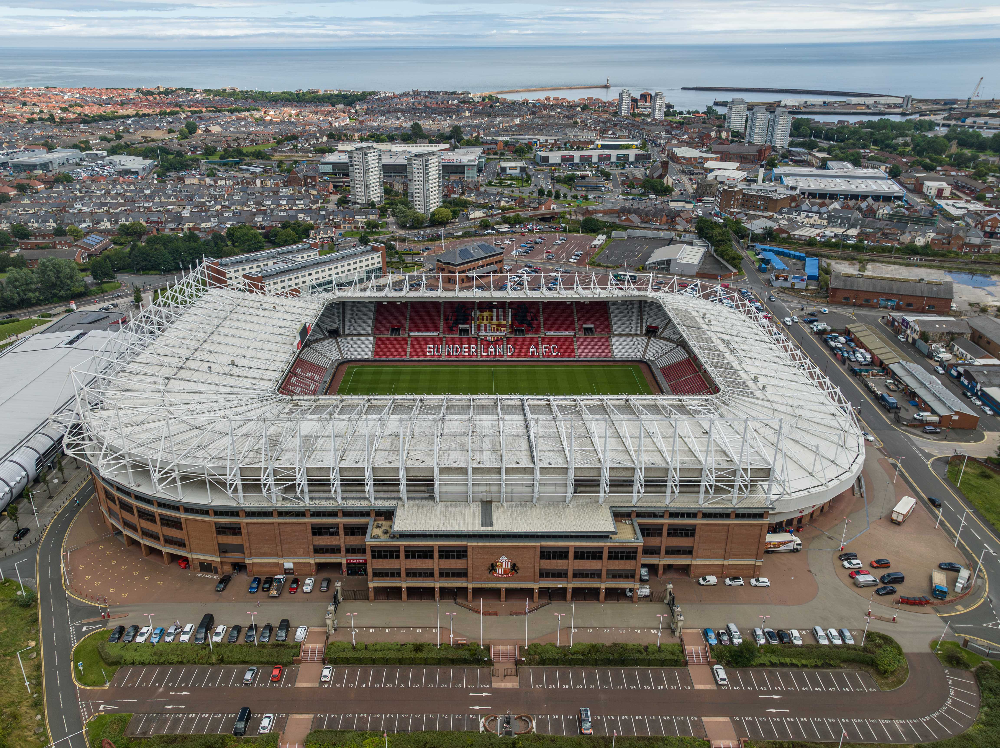
O Sunderland inaugurou o Stadium of Light em 30 de julho de 1997, em amistoso contra o Ajax, encerrando 99 anos de ligação com Roker Park. A arena foi erguida na área da antiga mina de Monkwearmouth, detalhe que conecta diretamente o estádio à identidade industrial de Sunderland. Sua capacidade é de aproximadamente 48,7 mil lugares, e o primeiro jogo competitivo terminou com vitória por 3 a 1 sobre o Swindon. Uma base contabilizava 304 partidas do Sunderland no Stadium of Light antes da atual temporada. Com os jogos em casa contra Fulham e Arsenal já realizados em 2026/27, esse subtotal chegou a 306 partidas somente de Premier League.
Tottenham Hotspur Stadium: uma arena da nova geração
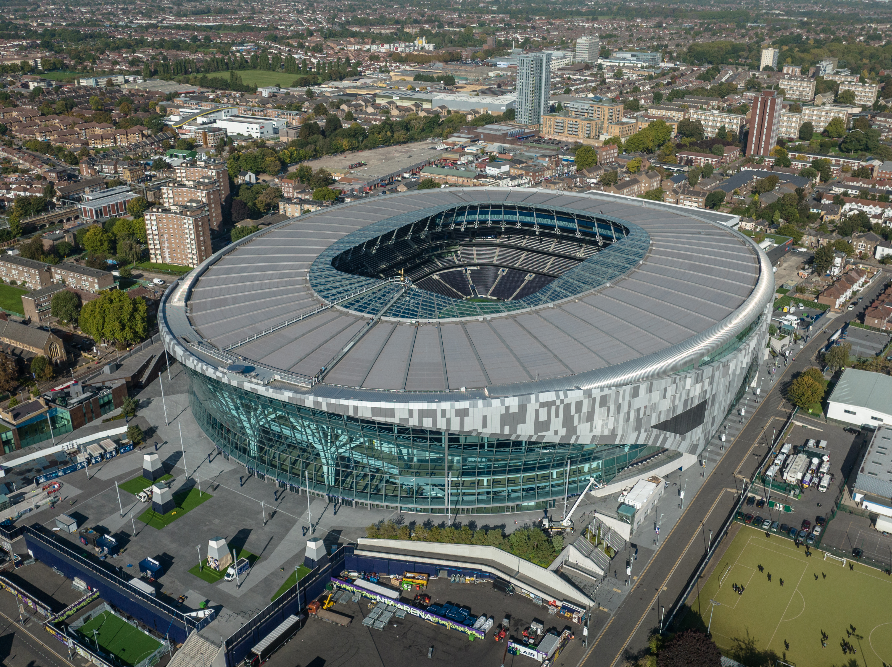
Inaugurado em abril de 2019, o Tottenham Hotspur Stadium foi construído praticamente sobre o território histórico de White Hart Lane, casa dos Spurs durante 118 anos. Com capacidade de 62.850 lugares, é o maior estádio de clubes de Londres e um dos projetos esportivos mais sofisticados da Europa, concebido também para receber eventos como partidas da NFL. É a versão contemporânea de uma relação territorial que o clube preferiu preservar em vez de simplesmente mudar de região. O estádio já registra 190 partidas concluídas do Tottenham no estádio entre abril de 2019 e setembro de 2026, considerando ligas e copas nacionais e continentais.
Vinte estádios que contam diferentes eras do futebol inglês
A Premier League 2026/27 coloca na mesma competição estádios que praticamente nasceram com seus clubes e arenas que ainda podem contar toda a própria história em poucas centenas de partidas. Old Trafford já supera 2.500 jogos documentados do Manchester United; o City Ground ultrapassa 3 mil eventos do Nottingham Forest; Anfield tem ao menos 1.680 partidas catalogadas apenas desde 1963. No outro extremo, o Everton ainda conta em dezenas de compromissos oficiais em sua nova casa.
Essa diferença é parte central da identidade da liga. Stamford Bridge, Anfield, Villa Park entre outros, sobreviveram a mudanças profundas no futebol e nas próprias cidades. Emirates, Etihad, Gtech e Tottenham Hotspur Stadium mostram outra lógica: mais receita, infraestrutura, hospitalidade e uso comercial ao longo do ano. Já Hill Dickinson Stadium simboliza uma transição em andamento, com o Everton deixando para trás mais de um século em Goodison Park sem abandonar Liverpool.
No fim, capacidade não explica sozinha o peso de um estádio. O que transforma essas arenas em referências é a soma entre onde está inserido, torcida, longevidade e partidas acumuladas. É por isso que uma liga com estádios de pouco mais de 11 mil lugares e outros acima de 60 mil consegue manter uma característica rara: cada casa continua contando uma parte diferente da história do futebol inglês.